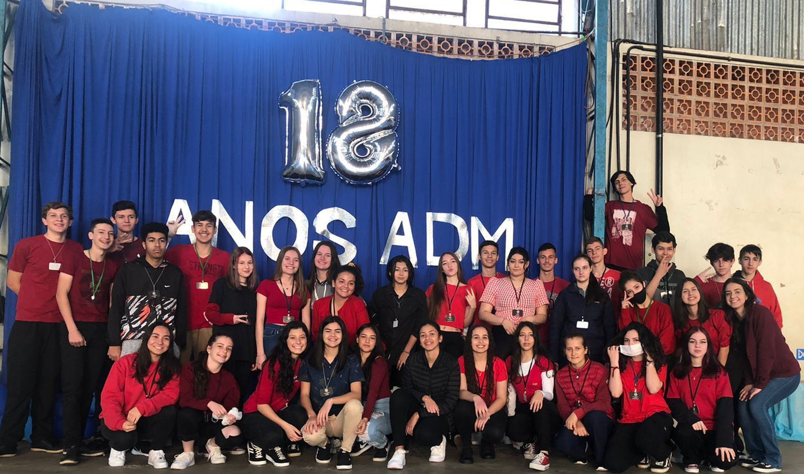

Quem somos nós?
A Máquina Mistério é uma empresa criada e administrada pelo 3º B do curso Técnico em Administração para o Ciclo de Palestras do ano de 2023. Em nossa última participação no evento(2022) ainda como "CrazyDog', tivemos grande sucesso e aprovação dos consumidores. Você também pode acessar e seguir nosso Instagram 🔗 para ficar por dentro de tudo sobre a Máquina Mistério

Neste ano, voltaremos como "Máquina Mistério" um nome diferente, porém com o mesmo objetivo: proporcionar o melhor produto possível para o consumidor por um preço justo. Neste ano nosso tema será Mistério S/A grupo de investigação do desenho animado "Scooby-Doo", com a estrutura da nossa empresa decorada para imitar a Máquina de Mistério, furgão usado pelos personagens no desenho, assim dando origem também ao nome da empresa. Caso queira saber sobre os produtos que serão vendidos neste ano clique aqui🔗.
Aonde estamos localizados?
Caso você queira compartilhar o evento com algum familiar ou amigo que queira vir prestigiar o melhor evento do Colégio Estadual Mario de Andrade e não sabe como chegar até nós?, pode conseguir nossa localização clicando em e aguarde o mapa carregar. O evento vai acontecer de 03 á 06 de outubro, contamos com você!